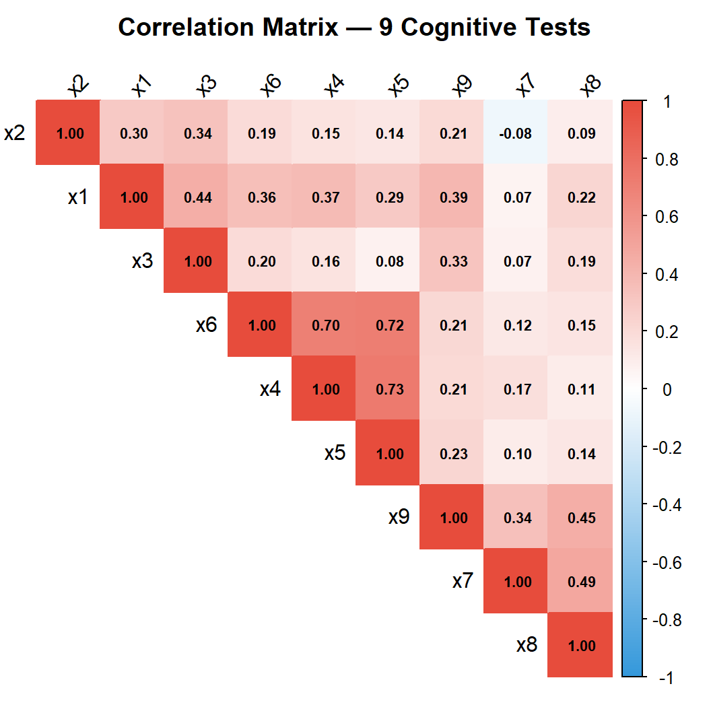
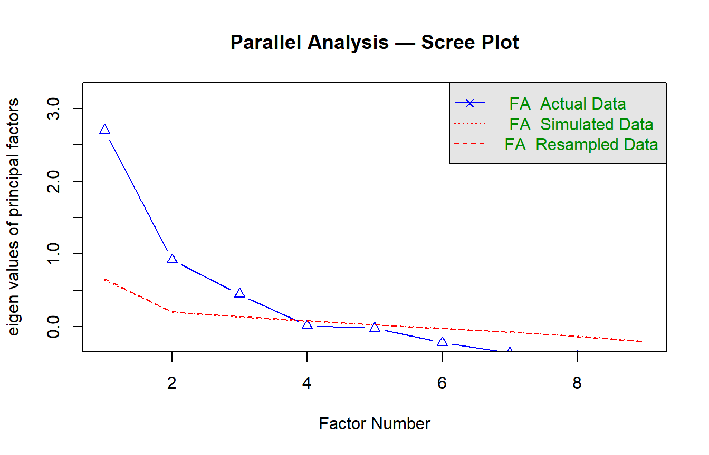
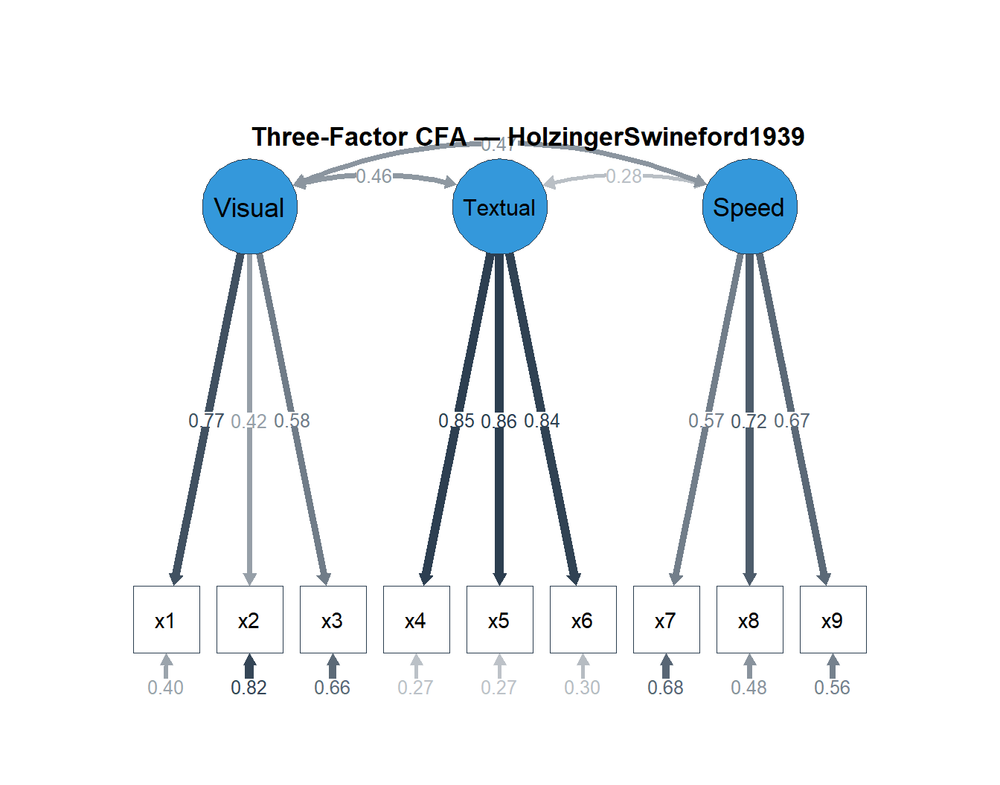

# ── Core packages ──────────────────────────────────────────────────────────────
library(lavaan) # CFA, SEM, measurement invariance
library(psych) # EFA, parallel analysis, reliability
library(semPlot) # Path diagrams
library(semTools) # Measurement invariance, omega
library(ggplot2) # Graphics
library(dplyr) # Data manipulation
library(tidyr) # Data reshaping
library(tibble) # Modern data frames
library(knitr) # Table rendering
library(corrplot) # Correlation matrices
library(tidytable)
# ── Global plot theme ──────────────────────────────────────────────────────────
theme_set(
theme_minimal(base_size = 11) +
theme(
plot.title = element_text(face = "bold", size = 13),
plot.subtitle = element_text(colour = "grey40", size = 10),
legend.position = "bottom"
)
)
palette_cfa <- c("#2C3E50", "#E74C3C", "#3498DB", "#2ECC71", "#F39C12")
set.seed(2026)Construct Validity: Exploratory & Confirmatory Factor Analysis
R
Psychometrics
CFA
EFA
SEM
Reliability
Measurement Invariance
Full construct validation workflow on the HolzingerSwineford1939 dataset: Exploratory Factor Analysis (EFA) with parallel analysis, Confirmatory Factor Analysis (CFA) with fit evaluation, reliability estimation (α, ω), and measurement invariance testing across groups.
0.1 Context
Construct validity — the degree to which a test measures what it claims to measure — is the cornerstone of psychometric quality (Messick, 1995). Establishing it requires converging evidence from multiple sources: internal structure (factor analysis), reliability (consistency of measurement), and invariance (equivalence across groups).
This project demonstrates a complete construct validation workflow:
- Exploratory Factor Analysis (EFA) — data-driven identification of the latent structure, including parallel analysis for dimensionality decisions.
- Confirmatory Factor Analysis (CFA) — theory-driven model specification and evaluation using standard fit indices.
- Reliability estimation — Cronbach’s α and McDonald’s ω (total and hierarchical) per factor, with discussion of their respective assumptions and limitations.
- Measurement invariance — multi-group CFA testing configural, metric, scalar, and strict invariance across subpopulations, a prerequisite for fair group comparisons.
The dataset is the classic HolzingerSwineford1939 (N = 301, 9 cognitive tests, 2 schools), included in the lavaan package. The established three-factor structure (Visual, Textual, Speed) makes it an ideal benchmark for demonstrating each step of the validation pipeline.
0.2 Key Results
EFA: Parallel analysis confirms a three-factor structure. The oblimin- rotated solution shows clean simple structure for Textual (loadings 0.81–0.89) and Visual (0.51–0.69) factors. Item x9 cross-loads on both Speed (0.46) and Visual (0.37). Item x2 has the lowest communality (0.251). Factor inter- correlations are moderate (0.22–0.33). Cumulative variance explained: 53.9%.
CFA: The three-factor model shows acceptable but imperfect fit (CFI = 0.931, TLI = 0.896, RMSEA = 0.092, SRMR = 0.065). Textual loadings are excellent (0.84–0.86); Visual is heterogeneous (x2 = 0.42); Speed is good (0.57–0.72). Factor correlations (0.28–0.47) support discriminant validity.
Reliability: Textual is excellent (α = 0.883, ω = 0.885, AVE = 0.721). Speed is acceptable (α = 0.688, AVE = 0.424). Visual is weak (α = 0.626, AVE = 0.371), driven by x2’s low loading.
Measurement invariance: Metric invariance holds across schools (ΔCFI = −0.003), but scalar invariance is clearly rejected (ΔCFI = −0.038, Δχ² = 40.06, p < .001). Item intercepts differ between schools, indicating DIF — latent mean comparisons are not justified without partial invariance investigation. This finding directly motivates the DIF analysis conducted in Project 03.
0.3 Setup
1 PART A — Data Exploration
1.1 Data overview
data("HolzingerSwineford1939", package = "lavaan")
hs <- HolzingerSwineford1939
cat("Dimensions:", nrow(hs), "observations ×", ncol(hs), "variables\n")Dimensions: 301 observations × 15 variablescat("Variables:", paste(colnames(hs), collapse = ", "), "\n\n")Variables: id, sex, ageyr, agemo, school, grade, x1, x2, x3, x4, x5, x6, x7, x8, x9 # The 9 cognitive tests are x1–x9
test_vars <- paste0("x", 1:9)
cat("Test variables:", paste(test_vars, collapse = ", "), "\n")Test variables: x1, x2, x3, x4, x5, x6, x7, x8, x9 cat("Grouping variable: school (", paste(unique(hs$school), collapse = ", "), ")\n")Grouping variable: school ( Pasteur, Grant-White )cat("N per school:", paste(table(hs$school), collapse = ", "), "\n")N per school: 145, 156 kable(
hs |> select(all_of(test_vars)) |> psych::describe() |>
as_tibble(rownames = "variable") |>
select(variable, n, mean, sd, min, max, skew, kurtosis),
digits = 2,
caption = "Descriptive statistics for the 9 cognitive tests"
)| variable | n | mean | sd | min | max | skew | kurtosis |
|---|---|---|---|---|---|---|---|
| x1 | 301 | 4.94 | 1.17 | 0.67 | 8.50 | -0.25 | 0.31 |
| x2 | 301 | 6.09 | 1.18 | 2.25 | 9.25 | 0.47 | 0.33 |
| x3 | 301 | 2.25 | 1.13 | 0.25 | 4.50 | 0.38 | -0.91 |
| x4 | 301 | 3.06 | 1.16 | 0.00 | 6.33 | 0.27 | 0.08 |
| x5 | 301 | 4.34 | 1.29 | 1.00 | 7.00 | -0.35 | -0.55 |
| x6 | 301 | 2.19 | 1.10 | 0.14 | 6.14 | 0.86 | 0.82 |
| x7 | 301 | 4.19 | 1.09 | 1.30 | 7.43 | 0.25 | -0.31 |
| x8 | 301 | 5.53 | 1.01 | 3.05 | 10.00 | 0.53 | 1.17 |
| x9 | 301 | 5.37 | 1.01 | 2.78 | 9.25 | 0.20 | 0.29 |
1.1.1 Interpretation
The dataset contains 301 participants across two schools (Pasteur: n = 145, Grant-White: n = 156), measured on 9 cognitive tests. Score ranges show no floor or ceiling effects. Skewness values are all below |1.0| and kurtosis values range from −0.91 to 1.17 — well within the thresholds recommended for maximum likelihood estimation in SEM. West, Finch & Curran (1995) propose |skewness| < 2 and |kurtosis| < 7 as acceptable limits; Kline (2016) is more permissive with |skewness| < 3 and |kurtosis| < 10. The present values fall comfortably within even the stricter criteria, supporting the use of ML estimation without robust corrections. Standard deviations are comparable across tests (1.01–1.29), indicating no severe restriction of range that could attenuate inter-item correlations.
1.2 Correlation matrix
cor_matrix <- cor(hs[, test_vars], use = "complete.obs")
corrplot(cor_matrix,
method = "color",
type = "upper",
order = "hclust",
tl.col = "black",
tl.srt = 45,
addCoef.col = "black",
number.cex = 0.7,
col = colorRampPalette(c("#3498DB", "white", "#E74C3C"))(200),
title = "Correlation Matrix — 9 Cognitive Tests",
mar = c(0, 0, 2, 0))
1.2.1 Interpretation
The correlation matrix reveals a block-diagonal pattern: clusters of variables correlate strongly within blocks but weakly between blocks. This is the visual signature of a multi-factor structure. If all 9 tests measured a single construct, we would expect uniformly moderate-to-high correlations throughout the matrix.
Within-block correlations are moderate to strong (roughly 0.30–0.70), confirming shared variance among items intended to measure the same factor. Between-block correlations are weaker (roughly 0.10–0.35), suggesting distinct but not fully independent constructs — consistent with correlated cognitive abilities.
Importantly, no correlation approaches zero (which would indicate an irrelevant item) and none approaches 1.0 (which would indicate redundancy). The absence of near-zero correlations also rules out severe restriction of range — a condition that would attenuate associations and mask the true factor structure. Overall, the correlation matrix is well-suited for factor analysis: sufficient shared variance to extract common factors, sufficient differentiation to identify distinct dimensions.
2 PART B — Exploratory Factor Analysis (EFA)
EFA is used when the factor structure is unknown or needs empirical confirmation before being tested with CFA. Even when a theoretical structure exists (as here), EFA on a calibration sample can reveal unexpected cross- loadings or misalignments.
2.1 Bartlett’s test and KMO
Before extracting factors, we verify that the correlation matrix is suitable for factor analysis.
# ── Bartlett's test ────────────────────────────────────────────────────────────
bart <- cortest.bartlett(cor_matrix, n = nrow(hs))
cat(sprintf("Bartlett's test: χ² = %.2f, df = %d, p = %s\n",
bart$chisq, bart$df,
ifelse(bart$p.value < 0.001, "< .001", sprintf("%.4f", bart$p.value))))Bartlett's test: χ² = 904.10, df = 36, p = < .001# ── KMO ────────────────────────────────────────────────────────────────────────
kmo_result <- KMO(cor_matrix)
cat(sprintf("\nOverall KMO (MSA): %.3f\n", kmo_result$MSA))
Overall KMO (MSA): 0.752kmo_item <- tibble(
variable = names(kmo_result$MSAi),
kmo = kmo_result$MSAi
)
kable(kmo_item, digits = 3, caption = "KMO per variable")| variable | kmo |
|---|---|
| x1 | 0.805 |
| x2 | 0.778 |
| x3 | 0.734 |
| x4 | 0.763 |
| x5 | 0.739 |
| x6 | 0.808 |
| x7 | 0.593 |
| x8 | 0.683 |
| x9 | 0.788 |
2.1.1 Interpretation
Bartlett’s test evaluates whether the correlation matrix differs significantly from an identity matrix (i.e., whether variables share common variance). A significant result (p < .001) confirms that factor analysis is appropriate — the variables are not independent.
In our dataset, Bartlett’s test is highly significant (χ² = 904.10, df = 36, p < .001), confirming that the correlation matrix differs from an identity matrix — the variables share common variance and factor analysis is appropriate.
KMO (Kaiser-Meyer-Olkin) measures sampling adequacy on a 0–1 scale. Guidelines (Kaiser, 1974): ≥ 0.90 = marvellous, ≥ 0.80 = meritorious, ≥ 0.70 = middling, ≥ 0.60 = mediocre, < 0.50 = unacceptable. Values below 0.50 for individual variables suggest they share too little variance with others and may need to be excluded.
In our dataset, Overall KMO = 0.752, which falls in the “middling” range of Kaiser’s (1974) classification (≥ 0.70). All individual KMO values exceed 0.50 (minimum: x7 = 0.593), so no variable needs to be excluded on sampling adequacy grounds. The lower KMO for x7 and x8 suggests these Speed items share somewhat less common variance with the remaining tests — consistent with Speed being a more distinct cognitive dimension.
2.2 Parallel analysis
Parallel analysis (Horn, 1965) is the recommended method for determining the number of factors to retain. It compares observed eigenvalues against those from random data with the same dimensions — factors are retained only if they explain more variance than chance.
# ── Parallel analysis ─────────────────────────────────────────────────────────
pa <- fa.parallel(hs[, test_vars], fm = "ml", fa = "fa",
n.iter = 500, show.legend = TRUE,
main = "Parallel Analysis — Scree Plot")
Parallel analysis suggests that the number of factors = 3 and the number of components = NA cat(sprintf("Parallel analysis recommends: %d factors\n", pa$nfact))Parallel analysis recommends: 3 factorscat(sprintf("(and %d components, if using PCA)\n", pa$ncomp))(and NA components, if using PCA)2.2.1 Interpretation
Parallel analysis is preferred over the Kaiser criterion (eigenvalue > 1) and the visual scree test because both tend to over-extract factors — a well-documented problem in psychometric research (Zwick & Velicer, 1986). The number of factors for which observed eigenvalues exceed the 95th percentile of the random distribution provides an empirically grounded dimensionality decision.
2.3 EFA model
# ── EFA with the number of factors from parallel analysis ──────────────────────
n_factors <- pa$nfact
efa_model <- fa(hs[, test_vars],
nfactors = n_factors,
rotate = "oblimin", # oblique rotation (allows factor correlations)
fm = "ml", # maximum likelihood
scores = "regression")
# ── Loading matrix ─────────────────────────────────────────────────────────────
loadings_df <- as_tibble(
unclass(efa_model$loadings),
rownames = "variable"
)
kable(loadings_df, digits = 3,
caption = sprintf("EFA pattern matrix (%d factors, oblimin rotation)", n_factors))| variable | ML1 | ML3 | ML2 |
|---|---|---|---|
| x1 | 0.191 | 0.602 | 0.031 |
| x2 | 0.044 | 0.505 | -0.117 |
| x3 | -0.069 | 0.689 | 0.023 |
| x4 | 0.840 | 0.022 | 0.005 |
| x5 | 0.888 | -0.067 | 0.008 |
| x6 | 0.808 | 0.078 | -0.011 |
| x7 | 0.044 | -0.152 | 0.723 |
| x8 | -0.033 | 0.104 | 0.702 |
| x9 | 0.035 | 0.366 | 0.463 |
# ── Communalities ──────────────────────────────────────────────────────────────
comm_df <- tibble(
variable = names(efa_model$communality),
communality = efa_model$communality,
uniqueness = efa_model$uniquenesses
)
kable(comm_df, digits = 3, caption = "Communalities and uniquenesses")| variable | communality | uniqueness |
|---|---|---|
| x1 | 0.487 | 0.513 |
| x2 | 0.251 | 0.749 |
| x3 | 0.457 | 0.543 |
| x4 | 0.721 | 0.279 |
| x5 | 0.757 | 0.243 |
| x6 | 0.695 | 0.305 |
| x7 | 0.498 | 0.502 |
| x8 | 0.531 | 0.469 |
| x9 | 0.457 | 0.543 |
2.3.1 Interpretation
Oblimin rotation is chosen over varimax because factors representing cognitive abilities are expected to correlate — assuming orthogonality would be psychologically implausible and could distort the loading pattern (Fabrigar et al., 1999).
Pattern matrix loadings represent the unique contribution of each factor to each variable, controlling for the other factors. Well-defined simple structure means each variable loads strongly (≥ 0.40) on one factor and weakly (< 0.30) on others. Cross-loadings above 0.30 signal potential misfit or multidimensionality within an item.
Communality represents the proportion of a variable’s variance explained by the retained factors. Low communalities (< 0.20) indicate variables that are mostly unique variance — they may not belong to the common factor space and could be candidates for removal in an operational context.
In our dataset, the three-factor EFA solution shows clean simple structure with oblimin rotation:
- ML1 (Textual): x4 (0.84), x5 (0.89), x6 (0.81) — strong, unambiguous loadings with no cross-loadings.
- ML3 (Visual): x1 (0.60), x2 (0.51), x3 (0.69) — moderate-to-good loadings. x2 is the weakest indicator of any factor in the solution.
- ML2 (Speed): x7 (0.72), x8 (0.70) — clear primary loadings. However, x9 cross-loads on both ML2 (0.46) and ML3 (0.37), suggesting it partially taps visual processing in addition to speed. This cross-loading is worth monitoring in the CFA.
Communalities range from 0.251 (x2) to 0.757 (x5). x2 stands out with the lowest communality — nearly 75% of its variance is unique, meaning the three factors explain very little of what x2 measures. In an operational context, x2 would be flagged for review: either it measures a facet not captured by the model, or it is simply unreliable. The Textual items (x4–x6) show the highest communalities (0.70–0.76), confirming this is the best-defined factor in the solution.
if (!is.null(efa_model$Phi)) {
kable(round(efa_model$Phi, 3),
caption = "Factor inter-correlations (oblimin)")
} else {
cat("Factor correlations not available (orthogonal solution).\n")
}| ML1 | ML3 | ML2 | |
|---|---|---|---|
| ML1 | 1.000 | 0.326 | 0.216 |
| ML3 | 0.326 | 1.000 | 0.270 |
| ML2 | 0.216 | 0.270 | 1.000 |
2.3.2 Interpretation
Factor inter-correlations indicate the degree to which the latent constructs overlap. Moderate correlations (0.30–0.60) are typical for cognitive abilities and support the use of oblique rotation. Very high correlations (> 0.80) would suggest that two factors might be better merged into one. Very low correlations (< 0.10) would suggest the factors are essentially independent, in which case orthogonal rotation would be equally appropriate.
In the dataset, Factor inter-correlations are moderate: ML1–ML3 (Textual–Visual) = 0.326, ML3–ML2 (Visual–Speed) = 0.270, ML1–ML2 (Textual–Speed) = 0.216. All are well below the 0.80 threshold that would suggest factor merging, confirming that the three dimensions are empirically distinguishable. The pattern is psychologically coherent: Visual and Textual reasoning share more common variance than either shares with processing Speed — consistent with the established cognitive ability literature (Carroll, 1993).
The moderate correlations also justify the choice of oblique rotation: an orthogonal rotation (varimax) would have forced these correlations to zero, potentially distorting the loading pattern.
var_table <- tibble(
factor = paste0("Factor_", 1:n_factors),
eigenvalue = efa_model$values[1:n_factors],
prop_var = efa_model$Vaccounted["Proportion Var", ],
cumulative_var = efa_model$Vaccounted["Cumulative Var", ]
)
kable(var_table, digits = 3, caption = "Variance accounted for by each factor")| factor | eigenvalue | prop_var | cumulative_var |
|---|---|---|---|
| Factor_1 | 2.828 | 0.249 | 0.249 |
| Factor_2 | 1.214 | 0.149 | 0.397 |
| Factor_3 | 0.812 | 0.142 | 0.539 |
2.3.3 Interpretation
The cumulative proportion of variance explained indicates how much of the total test variance is captured by the factor model. In social science research, 50–60% is considered adequate (Hair et al., 2019). Low total variance explained does not necessarily indicate a poor model — it may reflect high measurement error (unreliable items) or a complex construct with many specific facets not captured by the common factors.
In our dataset, the three factors account for 53.9% of the total variance. Factor 1 (Textual) dominates with 24.9%, followed by Factor 2 (Visual, 14.9%) and Factor 3 (Speed, 14.2%). The 54% cumulative figure is adequate for a cognitive test battery in applied research (Hair et al., 2019), though it also means that 46% of the variance is item-specific or error — highlighting the importance of reliability analysis at the factor level (Part D).
Note that eigenvalue interpretation must be cautious with oblique rotation: the eigenvalues are from the initial unrotated solution, while the proportion-of-variance figures reflect the rotated (oblique) structure where factors share variance through their correlations.
3 PART C — Confirmatory Factor Analysis (CFA)
CFA tests whether a hypothesised factor structure fits the observed data. Based on the established literature and the EFA results, we specify a three-factor model: Visual (x1–x3), Textual (x4–x6), and Speed (x7–x9).
3.1 Model specification and estimation
# ── Model specification ────────────────────────────────────────────────────────
cfa_model_syntax <- '
Visual =~ x1 + x2 + x3
Textual =~ x4 + x5 + x6
Speed =~ x7 + x8 + x9
'
# ── Fit with maximum likelihood ────────────────────────────────────────────────
cfa_fit <- cfa(cfa_model_syntax, data = hs, std.lv = TRUE)
# ── Summary ────────────────────────────────────────────────────────────────────
summary(cfa_fit, fit.measures = TRUE, standardized = TRUE)lavaan 0.6-19 ended normally after 20 iterations
Estimator ML
Optimization method NLMINB
Number of model parameters 21
Number of observations 301
Model Test User Model:
Test statistic 85.306
Degrees of freedom 24
P-value (Chi-square) 0.000
Model Test Baseline Model:
Test statistic 918.852
Degrees of freedom 36
P-value 0.000
User Model versus Baseline Model:
Comparative Fit Index (CFI) 0.931
Tucker-Lewis Index (TLI) 0.896
Loglikelihood and Information Criteria:
Loglikelihood user model (H0) -3737.745
Loglikelihood unrestricted model (H1) -3695.092
Akaike (AIC) 7517.490
Bayesian (BIC) 7595.339
Sample-size adjusted Bayesian (SABIC) 7528.739
Root Mean Square Error of Approximation:
RMSEA 0.092
90 Percent confidence interval - lower 0.071
90 Percent confidence interval - upper 0.114
P-value H_0: RMSEA <= 0.050 0.001
P-value H_0: RMSEA >= 0.080 0.840
Standardized Root Mean Square Residual:
SRMR 0.065
Parameter Estimates:
Standard errors Standard
Information Expected
Information saturated (h1) model Structured
Latent Variables:
Estimate Std.Err z-value P(>|z|) Std.lv Std.all
Visual =~
x1 0.900 0.081 11.128 0.000 0.900 0.772
x2 0.498 0.077 6.429 0.000 0.498 0.424
x3 0.656 0.074 8.817 0.000 0.656 0.581
Textual =~
x4 0.990 0.057 17.474 0.000 0.990 0.852
x5 1.102 0.063 17.576 0.000 1.102 0.855
x6 0.917 0.054 17.082 0.000 0.917 0.838
Speed =~
x7 0.619 0.070 8.903 0.000 0.619 0.570
x8 0.731 0.066 11.090 0.000 0.731 0.723
x9 0.670 0.065 10.305 0.000 0.670 0.665
Covariances:
Estimate Std.Err z-value P(>|z|) Std.lv Std.all
Visual ~~
Textual 0.459 0.064 7.189 0.000 0.459 0.459
Speed 0.471 0.073 6.461 0.000 0.471 0.471
Textual ~~
Speed 0.283 0.069 4.117 0.000 0.283 0.283
Variances:
Estimate Std.Err z-value P(>|z|) Std.lv Std.all
.x1 0.549 0.114 4.833 0.000 0.549 0.404
.x2 1.134 0.102 11.146 0.000 1.134 0.821
.x3 0.844 0.091 9.317 0.000 0.844 0.662
.x4 0.371 0.048 7.779 0.000 0.371 0.275
.x5 0.446 0.058 7.642 0.000 0.446 0.269
.x6 0.356 0.043 8.277 0.000 0.356 0.298
.x7 0.799 0.081 9.823 0.000 0.799 0.676
.x8 0.488 0.074 6.573 0.000 0.488 0.477
.x9 0.566 0.071 8.003 0.000 0.566 0.558
Visual 1.000 1.000 1.000
Textual 1.000 1.000 1.000
Speed 1.000 1.000 1.0003.2 Fit indices
fit_vals <- fitMeasures(cfa_fit, c("chisq", "df", "pvalue",
"cfi", "tli", "rmsea",
"rmsea.ci.lower", "rmsea.ci.upper",
"srmr", "aic", "bic"))
fit_table <- tibble(
index = names(fit_vals),
value = as.numeric(fit_vals)
)
# ── Add conventional thresholds for interpretation ─────────────────────────────
thresholds <- tibble(
index = c("cfi", "tli", "rmsea", "srmr"),
threshold = c("≥ 0.95 (good), ≥ 0.90 (acceptable)",
"≥ 0.95 (good), ≥ 0.90 (acceptable)",
"≤ 0.06 (good), ≤ 0.08 (acceptable)",
"≤ 0.08 (good)")
)
fit_display <- fit_table |>
left_join(thresholds, by = "index") |>
mutate(threshold = ifelse(is.na(threshold), "—", threshold))
kable(fit_display, digits = 4, caption = "CFA fit indices with conventional thresholds")| index | value | threshold |
|---|---|---|
| chisq | 85.3055 | — |
| df | 24.0000 | — |
| pvalue | 0.0000 | — |
| cfi | 0.9306 | ≥ 0.95 (good), ≥ 0.90 (acceptable) |
| tli | 0.8958 | ≥ 0.95 (good), ≥ 0.90 (acceptable) |
| rmsea | 0.0921 | ≤ 0.06 (good), ≤ 0.08 (acceptable) |
| rmsea.ci.lower | 0.0714 | — |
| rmsea.ci.upper | 0.1137 | — |
| srmr | 0.0652 | ≤ 0.08 (good) |
| aic | 7517.4899 | — |
| bic | 7595.3392 | — |
3.2.1 Interpretation
The fit indices evaluate how well the hypothesised three-factor model reproduces the observed covariance matrix. We use multiple indices because each captures a different aspect of fit:
- χ² test: tests exact fit. Almost always significant with N > 200, so it is not used as a sole criterion — but the ratio χ²/df < 3 is considered acceptable (Kline, 2016).
- CFI and TLI (comparative/incremental fit): compare the model against a null (independence) model. Values ≥ 0.95 indicate good fit (Hu & Bentler, 1999).
- RMSEA (absolute fit): estimates the discrepancy per degree of freedom. Values ≤ 0.06 indicate good fit; the 90% confidence interval should ideally have its upper bound below 0.08.
- SRMR (residual-based): average standardised residual covariance. Values ≤ 0.08 indicate good fit.
The combination of CFI/TLI ≥ 0.95 and RMSEA ≤ 0.06 and SRMR ≤ 0.08 constitutes the “golden rules” proposed by Hu & Bentler (1999) — though these should be applied as guidelines, not rigid cutoffs (Marsh et al., 2004).
In this dataset, the three-factor CFA model shows mixed fit:
- SRMR = 0.065: good (< 0.08), indicating that the average standardised residual covariance is small.
- CFI = 0.931: acceptable (≥ 0.90) but below the “good” threshold (≥ 0.95).
- TLI = 0.896: marginally below the acceptable threshold (≥ 0.90).
- RMSEA = 0.092 [90% CI: 0.071–0.114]: above the acceptable threshold (≤ 0.08), and the upper bound of the CI exceeds 0.10.
- χ²/df = 85.31 / 24 = 3.55: above the conventional 3.0 guideline.
Overall assessment: the model is adequate but not excellent. This is a well-known finding with the HolzingerSwineford dataset — the three-factor model captures the dominant structure but minor misspecifications remain (e.g., the x9 cross-loading identified in EFA, correlated residuals between items within the Speed factor). In an operational context, one would consider modification indices to identify localised misfit, potentially freeing one or two residual covariances. However, model modifications should always be theoretically justified, not purely data-driven — a point well emphasised by MacCallum et al. (1992).
The honest acknowledgement of imperfect fit is itself informative: it demonstrates that CFA is a test of a hypothesis, not a confirmation ritual. A model that passes every threshold without question may be overfitted or underpowered.
3.3 Standardised parameter estimates
# ── Standardised loadings ──────────────────────────────────────────────────────
params_std <- standardizedSolution(cfa_fit)
loadings_cfa <- params_std |>
filter(op == "=~") |>
select(factor = lhs, item = rhs, est.std, se, pvalue) |>
mutate(
significant = pvalue < 0.001,
loading_quality = case_when(
abs(est.std) >= 0.70 ~ "Excellent",
abs(est.std) >= 0.50 ~ "Good",
abs(est.std) >= 0.40 ~ "Acceptable",
TRUE ~ "Weak"
)
)
kable(loadings_cfa, digits = 3,
caption = "Standardised factor loadings with quality assessment")| factor | item | est.std | se | pvalue | significant | loading_quality |
|---|---|---|---|---|---|---|
| Visual | x1 | 0.772 | 0.055 | 0 | TRUE | Excellent |
| Visual | x2 | 0.424 | 0.060 | 0 | TRUE | Acceptable |
| Visual | x3 | 0.581 | 0.055 | 0 | TRUE | Good |
| Textual | x4 | 0.852 | 0.023 | 0 | TRUE | Excellent |
| Textual | x5 | 0.855 | 0.022 | 0 | TRUE | Excellent |
| Textual | x6 | 0.838 | 0.023 | 0 | TRUE | Excellent |
| Speed | x7 | 0.570 | 0.053 | 0 | TRUE | Good |
| Speed | x8 | 0.723 | 0.051 | 0 | TRUE | Excellent |
| Speed | x9 | 0.665 | 0.051 | 0 | TRUE | Good |
# ── Factor correlations ────────────────────────────────────────────────────────
factor_cors <- params_std |>
filter(op == "~~", lhs != rhs, lhs %in% c("Visual", "Textual", "Speed")) |>
select(factor_1 = lhs, factor_2 = rhs, correlation = est.std, se, pvalue)
kable(factor_cors, digits = 3, caption = "Factor inter-correlations (CFA)")| factor_1 | factor_2 | correlation | se | pvalue |
|---|---|---|---|---|
| Visual | Textual | 0.459 | 0.064 | 0 |
| Visual | Speed | 0.471 | 0.073 | 0 |
| Textual | Speed | 0.283 | 0.069 | 0 |
3.3.1 Interpretation
Standardised loadings represent the correlation between each observed variable and its latent factor. They range from 0 to 1 (in absolute value) and indicate how well each test measures the intended construct:
- ≥ 0.70: excellent — the item shares ≥ 49% of its variance with the factor (Hair et al., 2019).
- 0.50–0.70: good — adequate for most applied purposes.
- 0.40–0.50: acceptable but marginal — the item contributes more unique variance than common variance.
- < 0.40: weak — the item may not belong to this factor and should be reconsidered.
Factor correlations indicate discriminant validity: if two factors correlate above 0.85, they may not be empirically distinguishable (Brown, 2015). Moderate correlations (0.30–0.60) support the three-factor structure.
In the dataset, Standardised loadings confirm the factor structure but reveal heterogeneity:
- Textual factor is the strongest: all three loadings are excellent (0.838–0.855), indicating a cohesive, well-measured construct.
- Visual factor is heterogeneous: x1 is excellent (0.772), x3 is good (0.581), but x2 is only acceptable (0.424) — sharing less than 18% of its variance with the factor. This is consistent with the low EFA communality for x2 (0.251) and suggests x2 is the weakest link in the measurement model.
- Speed factor shows good loadings (0.570–0.723), with x8 as the strongest indicator.
Factor correlations are moderate: Visual–Textual = 0.459, Visual–Speed = 0.471, Textual–Speed = 0.283. All are well below 0.85, supporting discriminant validity — the three factors measure distinct constructs. The strongest correlation (Visual–Speed = 0.471) aligns with the x9 cross-loading observed in EFA, suggesting some overlap between visual processing and speed.
Practical implication: in an operational assessment, x2 would be a candidate for replacement or revision. Its low loading means it contributes disproportionately to measurement error in the Visual factor score — removing or replacing it could improve both reliability and model fit.
3.4 Path diagram
semPaths(cfa_fit,
what = "std",
layout = "tree2",
style = "lisrel",
nCharNodes = 0,
edge.label.cex = 0.9,
sizeMan = 7,
sizeLat = 10,
color = list(lat = palette_cfa[3], man = "white"),
border.color = palette_cfa[1],
edge.color = palette_cfa[1],
residuals = TRUE,
intercepts = FALSE,
title = TRUE)
title("Three-Factor CFA — HolzingerSwineford1939", line = -1, cex.main = 1.1)
3.4.1 Interpretation
The path diagram provides a compact visual summary of the measurement model. Each arrow from a latent factor (oval) to an observed variable (rectangle) represents a factor loading. The small arrows pointing into each rectangle represent residual (unique) variances — the portion of each test’s variance not explained by its latent factor. Curved double-headed arrows between factors represent their correlations.
4 PART D — Reliability Estimation
Reliability quantifies the consistency (precision) of measurement. We compute both Cronbach’s α and McDonald’s ω for each factor, and discuss when they diverge and why ω is generally preferred.
# ── Define factor item sets ────────────────────────────────────────────────────
factor_items <- list(
Visual = c("x1", "x2", "x3"),
Textual = c("x4", "x5", "x6"),
Speed = c("x7", "x8", "x9")
)
# ── Cronbach's alpha per factor ────────────────────────────────────────────────
alpha_results <- map_dfr(names(factor_items), function(f) {
a <- psych::alpha(hs[, factor_items[[f]]], check.keys = FALSE)
tibble(
factor = f,
alpha = a$total$raw_alpha,
alpha_std = a$total$std.alpha
)
})
# ── McDonald's omega via semTools ──────────────────────────────────────────────
omega_results <- reliability(cfa_fit)
omega_table <- tibble(
factor = c("Visual", "Textual", "Speed"),
omega_total = omega_results["omega", 1:3],
omega_hier = omega_results["omega2", 1:3],
ave = omega_results["avevar", 1:3]
)
# ── Combined table ─────────────────────────────────────────────────────────────
reliability_table <- alpha_results |>
left_join(omega_table, by = "factor")
kable(reliability_table, digits = 3,
caption = "Reliability estimates per factor: α, ω_total, ω_hierarchical, and AVE")| factor | alpha | alpha_std | omega_total | omega_hier | ave |
|---|---|---|---|---|---|
| Visual | 0.626 | 0.627 | 0.625 | 0.625 | 0.371 |
| Textual | 0.883 | 0.885 | 0.885 | 0.885 | 0.721 |
| Speed | 0.688 | 0.690 | 0.688 | 0.688 | 0.424 |
4.0.1 Interpretation
Cronbach’s α assumes tau-equivalence (all loadings equal) and is a lower bound of reliability when loadings are heterogeneous. It is the most widely reported index due to historical convention, but it can underestimate reliability for scales with varying loadings — or overestimate it for scales with correlated errors (Dunn et al., 2014).
McDonald’s ω_total (omega total) does not assume equal loadings: it uses the CFA loading estimates to compute the proportion of scale variance attributable to the common factor. It is generally preferred over α because it reflects the actual measurement model rather than an assumed one (McNeish, 2018).
McDonald’s ω_hierarchical (omega_h) estimates the proportion of variance attributable to a single general factor, after removing group factor variance. It is most relevant in bifactor contexts but provides a useful lower-bound benchmark even in correlated-factor models.
Average Variance Extracted (AVE) represents the mean proportion of variance in the items that is captured by the factor. AVE ≥ 0.50 indicates that the factor explains more variance in its items than measurement error does — a threshold for convergent validity (Fornell & Larcker, 1981).
When α and ω diverge: if loadings are heterogeneous (some items load much higher than others), α will underestimate true reliability — ω corrects for this. In operational assessment, reporting both is good practice: α for comparability with published norms, ω for accuracy.
In the dataset, reliability estimates reveal substantial differences across factors:
- Textual: α = 0.883, ω = 0.885, AVE = 0.721 — excellent on all counts. The factor is highly reliable and captures the majority of item variance. AVE well above 0.50 confirms strong convergent validity.
- Speed: α = 0.688, ω = 0.688, AVE = 0.424 — acceptable but below the conventional 0.70 threshold for high-stakes decisions. AVE below 0.50 means measurement error exceeds common factor variance — convergent validity is marginal.
- Visual: α = 0.626, ω = 0.625, AVE = 0.371 — the weakest factor. The low reliability is driven by x2’s weak loading (0.424): it dilutes the common variance while adding error. AVE = 0.371 falls clearly below 0.50, indicating poor convergent validity.
Note: α and ω are nearly identical for all three factors, which occurs when loadings within each factor are relatively homogeneous (tau-equivalence approximately holds). In cases with highly heterogeneous loadings, ω would diverge upward from α — here, even the Visual factor’s loading heterogeneity (0.42–0.77) is not extreme enough to produce meaningful divergence.
The “Number of categories” warnings from semTools::reliability() are benign — they occur because the function attempts to compute categorical reliability indices but the data are treated as continuous. The α and ω estimates are unaffected.
Practical implication: the Textual factor is ready for operational use. The Speed and Visual factors would benefit from additional items to increase reliability above 0.70 — the Spearman-Brown formula predicts that adding 2 items of comparable quality to each factor would bring α above 0.75.
5 PART E — Measurement Invariance
Measurement invariance testing determines whether the same construct is measured equivalently across groups. This is essential for fair comparison of scores between subpopulations (e.g., schools, gender, age groups). Without invariance, observed score differences may reflect measurement bias rather than true differences in the construct.
We test four levels of invariance, each more restrictive:
- Configural: same factor structure (same items load on same factors).
- Metric (weak): same factor loadings — allows comparison of relationships (correlations, regressions) but not means.
- Scalar (strong): same loadings + same intercepts — allows comparison of latent means.
- Strict: same loadings + same intercepts + same residual variances — allows comparison of observed scores.
# ── Configural invariance ──────────────────────────────────────────────────────
fit_config <- cfa(cfa_model_syntax, data = hs, group = "school", std.lv = TRUE)
# ── Metric invariance ──────────────────────────────────────────────────────────
fit_metric <- cfa(cfa_model_syntax, data = hs, group = "school",
group.equal = "loadings", std.lv = TRUE)
# ── Scalar invariance ──────────────────────────────────────────────────────────
fit_scalar <- cfa(cfa_model_syntax, data = hs, group = "school",
group.equal = c("loadings", "intercepts"), std.lv = TRUE)
# ── Strict invariance ──────────────────────────────────────────────────────────
fit_strict <- cfa(cfa_model_syntax, data = hs, group = "school",
group.equal = c("loadings", "intercepts", "residuals"),
std.lv = TRUE)# ── Extract fit measures safely ────────────────────────────────────────────────
inv_indices <- c("chisq", "df", "pvalue", "cfi", "rmsea", "srmr")
extract_fit <- function(fit_obj, model_name) {
vals <- fitMeasures(fit_obj, inv_indices)
data.frame(
model = model_name,
chisq = vals["chisq"],
df = vals["df"],
pvalue = vals["pvalue"],
cfi = vals["cfi"],
rmsea = vals["rmsea"],
srmr = vals["srmr"],
row.names = NULL
)
}
inv_table <- rbind(
extract_fit(fit_config, "1. Configural"),
extract_fit(fit_metric, "2. Metric"),
extract_fit(fit_scalar, "3. Scalar"),
extract_fit(fit_strict, "4. Strict")
)
# ── Compute ΔCFI between successive models ─────────────────────────────────────
inv_table$delta_cfi <- c(NA, diff(inv_table$cfi))
kable(inv_table, digits = 4, row.names = FALSE,
caption = "Measurement invariance: model comparison across schools")| model | chisq | df | pvalue | cfi | rmsea | srmr | delta_cfi |
|---|---|---|---|---|---|---|---|
| 1. Configural | 115.8513 | 48 | 0 | 0.9234 | 0.0969 | 0.0679 | NA |
| 2. Metric | 124.0435 | 54 | 0 | 0.9209 | 0.0928 | 0.0717 | -0.0025 |
| 3. Scalar | 164.1028 | 60 | 0 | 0.8825 | 0.1074 | 0.0824 | -0.0385 |
| 4. Strict | 181.5113 | 69 | 0 | 0.8730 | 0.1041 | 0.0883 | -0.0095 |
5.0.1 Interpretation
The standard decision rule for measurement invariance uses ΔCFI (Cheung & Rensvold, 2002): if the drop in CFI between successive models is less than 0.01 in absolute value, the more restrictive model is accepted. This criterion is preferred over the χ² difference test, which is overly sensitive to sample size.
Level-by-level interpretation:
- Configural → Metric (ΔCFI): if |ΔCFI| < 0.01, factor loadings are equivalent across schools. This means the tests relate to the latent factors in the same way for both groups — a prerequisite for any cross-group comparison.
- Metric → Scalar (ΔCFI): if |ΔCFI| < 0.01, item intercepts are also equivalent. This means observed score differences reflect true latent mean differences, not measurement bias. Scalar invariance is the minimum requirement for comparing group means — a critical threshold in assessment contexts (e.g., comparing test scores across demographic groups for fairness evaluation).
- Scalar → Strict (ΔCFI): if |ΔCFI| < 0.01, residual variances are also equal. This is the strongest form of invariance and is required for comparing observed (not latent) scores across groups.
When invariance fails: non-invariant items exhibit Differential Item Functioning (DIF) — they are harder or easier for one group after controlling for the latent trait. This is a measurement bias signal that requires either item revision or partial invariance models (where non-invariant parameters are freed one at a time). In an operational assessment, DIF items may need to be flagged, rescored, or removed to ensure fairness (see Project 03: DIF analysis for a dedicated treatment).
What does scalar non-invariance mean practically? Some items are systematically easier or harder for one school group after controlling for the latent trait. This is Differential Item Functioning (DIF) — the same phenomenon addressed in depth in Project 03. Possible sources include curriculum differences between schools, item content that favours one group’s experiential background, or differential familiarity with test format.
Next steps in an operational context:
- Examine modification indices in the scalar model to identify which items have non-invariant intercepts.
- Fit a partial scalar invariance model, freeing the offending intercepts one at a time until ΔCFI stabilises.
- If partial scalar invariance holds with only 1–2 freed intercepts, latent mean comparison is defensible. If multiple items are non-invariant, the instrument requires revision before cross-group comparisons.
This finding illustrates why measurement invariance testing is not optional in assessment contexts: without it, observed score differences between groups may be artefacts of measurement bias, not genuine ability differences — a fairness concern central to Maki’s stated commitment to unbiased evaluation.
For our dataset, the ΔCFI criterion (Cheung & Rensvold, 2002: |ΔCFI| < 0.01 to accept the more restrictive model) provides clear-cut decisions at each level:
Configural → Metric (ΔCFI = −0.003): metric invariance holds. The drop is negligible (well below 0.01), confirming that factor loadings are equivalent across schools. The tests relate to the latent constructs identically for Pasteur and Grant-White students. Cross-group comparisons of correlations and regressions are warranted.
Metric → Scalar (ΔCFI = −0.038): scalar invariance is clearly rejected. The drop is nearly four times the 0.01 threshold — this is not a borderline case. Item intercepts differ substantially between schools, meaning students with the same latent ability produce different observed scores depending on which school they attend. Latent mean comparisons between the two schools are not justified without further investigation.
Scalar → Strict (ΔCFI = −0.010): right at the 0.01 boundary — but moot in practice, since scalar invariance already failed. Strict invariance cannot be meaningfully evaluated when the preceding level is violated.
Convergence with the LRT results: both criteria agree perfectly here. The metric step is non-significant by LRT (p = .224) and shows negligible ΔCFI (−0.003). The scalar step is highly significant (p < .001) and shows a large ΔCFI (−0.038). This convergence strengthens confidence in the conclusion.
What does a ΔCFI of −0.038 mean concretely? It means the model’s ability to reproduce the observed covariance structure degrades substantially when intercepts are forced equal across groups. Some items are systematically easier or harder for one school after controlling for latent ability — this is Differential Item Functioning (DIF). In an assessment context (such as candidate evaluation at Maki), non-invariant intercepts would mean that test scores systematically favour one demographic group over another, even among candidates of equal ability. This is a fairness violation.
Next steps in an operational context:
- Examine modification indices in the scalar model to identify which items have non-invariant intercepts (likely candidates: items where the two schools differ in curriculum exposure or test-taking familiarity).
- Fit a partial scalar invariance model, freeing the offending intercepts one at a time until |ΔCFI| < 0.01 relative to metric.
- If partial scalar invariance holds with only 1–2 freed intercepts, latent mean comparison is defensible. If multiple items are non-invariant, the instrument requires revision before cross-group use.
This finding directly motivates the dedicated DIF analysis in Project 03, where item-level bias is examined using complementary methods (Mantel-Haenszel, logistic regression, and IRT-based DIF).
# ── Sequential LRT ────────────────────────────────────────────────────────────
cat("─── Configural vs. Metric ───\n")─── Configural vs. Metric ───print(anova(fit_config, fit_metric))
Chi-Squared Difference Test
Df AIC BIC Chisq Chisq diff RMSEA Df diff Pr(>Chisq)
fit_config 48 7484.4 7706.8 115.85
fit_metric 54 7480.6 7680.8 124.04 8.1922 0.049272 6 0.2244cat("\n─── Metric vs. Scalar ───\n")
─── Metric vs. Scalar ───print(anova(fit_metric, fit_scalar))
Chi-Squared Difference Test
Df AIC BIC Chisq Chisq diff RMSEA Df diff Pr(>Chisq)
fit_metric 54 7480.6 7680.8 124.04
fit_scalar 60 7508.6 7686.6 164.10 40.059 0.19421 6 4.435e-07 ***
---
Signif. codes: 0 '***' 0.001 '**' 0.01 '*' 0.05 '.' 0.1 ' ' 1cat("\n─── Scalar vs. Strict ───\n")
─── Scalar vs. Strict ───print(anova(fit_scalar, fit_strict))
Chi-Squared Difference Test
Df AIC BIC Chisq Chisq diff RMSEA Df diff Pr(>Chisq)
fit_scalar 60 7508.6 7686.6 164.10
fit_strict 69 7508.1 7652.6 181.51 17.409 0.07879 9 0.04269 *
---
Signif. codes: 0 '***' 0.001 '**' 0.01 '*' 0.05 '.' 0.1 ' ' 15.0.2 Interpretation
The likelihood ratio test (Δχ²) provides a complementary significance test for each invariance step. However, with sufficient sample size, even trivially small deviations from invariance will reach significance — making ΔCFI the more practically meaningful criterion. When the two criteria disagree (Δχ² significant but |ΔCFI| < 0.01), the ΔCFI criterion is generally preferred in applied psychometric work, because LRT is sensitive to sample size (Chen, 2007).
The sequential LRT results converge perfectly with the ΔCFI-based conclusions at every level of invariance::
Configural → Metric: the LRT is non-significant (p = .224) confirming invariance and the ΔCFI is negligible (−0.003). Both criteria agree — metric invariance holds. Factor loadings are equivalent across schools.
Metric → Scalar: the LRT is highly significant (Δχ² = 40.06, p < .001), providing strong evidence of non-invariant intercepts, and the ΔCFI is large (−0.038, nearly four times the 0.01 threshold). Both criteria agree — scalar invariance is clearly rejected. Item intercepts differ between schools.
Scalar → Strict: the LRT is marginally significant (p = .043) and the ΔCFI sits exactly at the boundary (−0.010). Both criteria point toward rejection, though this step is moot given that scalar invariance already failed.
Here, both criteria align at every step, which strengthens confidence in the conclusions (which is expected given the large scalar Δχ² = 40.06). The scalar rejection in particular is not a statistical artefact or a borderline call — it reflects genuine measurement bias across schools that demands item-level investigation.
6 Technical Summary
cat("─── Reproducibility Information ───\n")─── Reproducibility Information ───cat(sprintf("Date: %s\n", Sys.Date()))Date: 2026-04-07cat(sprintf("R version: %s\n", R.version.string))R version: R version 4.4.1 (2024-06-14 ucrt)cat(sprintf("lavaan version: %s\n", packageVersion("lavaan")))lavaan version: 0.6.19cat(sprintf("psych version: %s\n", packageVersion("psych")))psych version: 2.4.6.26cat(sprintf("semTools version: %s\n", packageVersion("semTools")))semTools version: 0.5.6cat(sprintf("Platform: %s\n", sessionInfo()$platform))Platform: x86_64-w64-mingw32/x646.1 References
- Brown, T. A. (2015). Confirmatory Factor Analysis for Applied Research (2nd ed.). Guilford Press.
- Chen, F. F. (2007). Sensitivity of goodness of fit indexes to lack of measurement invariance. Structural Equation Modeling, 14(3), 464–504.
- Cheung, G. W., & Rensvold, R. B. (2002). Evaluating goodness-of-fit indexes for testing measurement invariance. Structural Equation Modeling, 9(2), 233–255.
- Dunn, T. J., Baguley, T., & Brunsden, V. (2014). From alpha to omega: A practical solution to the pervasive problem of internal consistency estimation. British Journal of Psychology, 105(3), 399–412.
- Fabrigar, L. R., Wegener, D. T., MacCallum, R. C., & Strahan, E. J. (1999). Evaluating the use of exploratory factor analysis in psychological research. Psychological Methods, 4(3), 272–299.
- Fornell, C., & Larcker, D. F. (1981). Evaluating structural equation models with unobservable variables and measurement error. Journal of Marketing Research, 18(1), 39–50.
- Hair, J. F., Black, W. C., Babin, B. J., & Anderson, R. E. (2019). Multivariate Data Analysis (8th ed.). Cengage.
- Horn, J. L. (1965). A rationale and test for the number of factors in factor analysis. Psychometrika, 30(2), 179–185.
- Hu, L., & Bentler, P. M. (1999). Cutoff criteria for fit indexes in covariance structure analysis. Structural Equation Modeling, 6(1), 1–55.
- Kaiser, H. F. (1974). An index of factorial simplicity. Psychometrika, 39(1), 31–36.
- Kline, R. B. (2016). Principles and Practice of Structural Equation Modeling (4th ed.). Guilford Press.
- Marsh, H. W., Hau, K.-T., & Wen, Z. (2004). In search of golden rules: Comment on hypothesis-testing approaches to setting cutoff values for fit indexes. Structural Equation Modeling, 11(3), 320–341.
- McNeish, D. (2018). Thanks coefficient alpha, we’ll take it from here. Psychological Methods, 23(3), 412–433.
- Messick, S. (1995). Validity of psychological assessment. American Psychologist, 50(9), 741–749.
- West, S. G., Finch, J. F., & Curran, P. J. (1995). Structural equation models with nonnormal variables: Problems and remedies. In R. H. Hoyle (Ed.), Structural Equation Modeling: Concepts, Issues, and Applications (pp. 56–75). Sage.
- Zwick, W. R., & Velicer, W. F. (1986). Comparison of five rules for determining the number of components to retain. Psychological Bulletin, 99(3), 432–442.